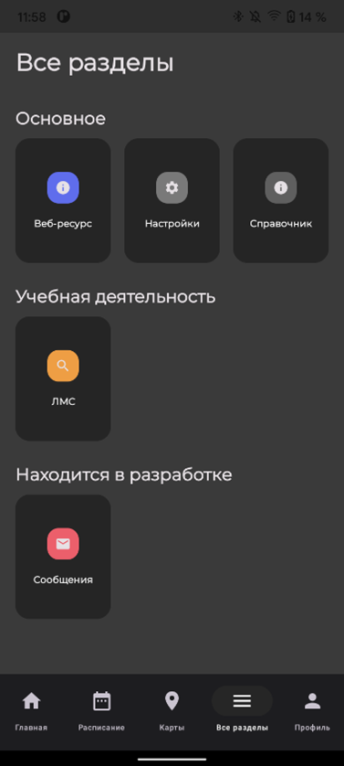
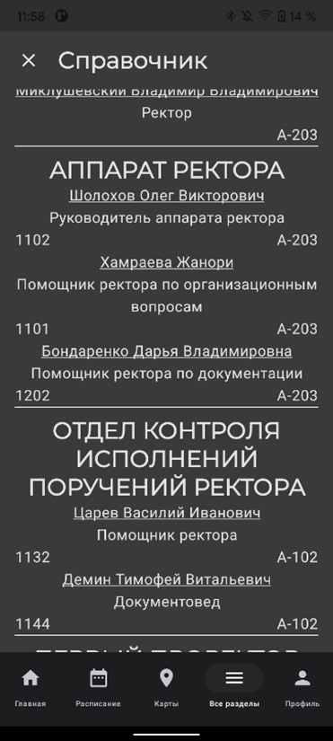
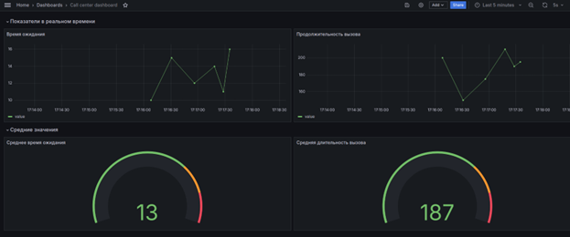
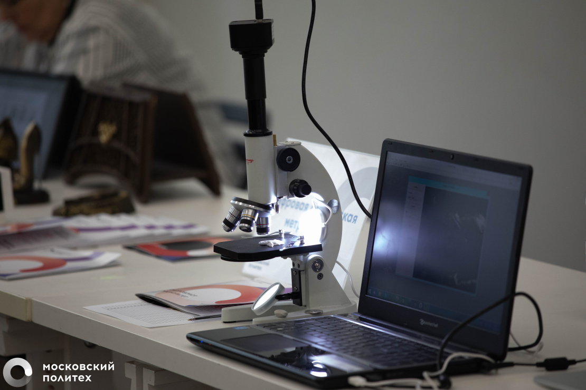

Лента новостей
Первый промежуточный продуктовый результат мобильного приложения личного кабинета
В Figma были разработаны детализированные UI-экраны для приложения,
охватывающие ключевые разделы, такие как "Телефонный справочник" и "Главная".
Примеры представлены на рисунках.


Эти экраны представляют собой визуальные и функциональные прототипы интерфейса для пользователей
на обеих платформах — Android и iOS, с учетом особенностей каждой операционной системы.
Дата публикации: 24.02.2025
Сервис визуализации данных для колл-центра Московского политеха
На данный момент был развернут сервис Grafana на личном устройстве одного из разработчиков и
создана тестовая база данных телефонии. Были созданы визуализации ключевых показателей,
таких как время ожидания и продолжительность вызова, а также средние значения по этим показателям.

Эти данные визуализируются в реальном времени, что позволяет отслеживать эффективность работы операторов
и уровень обслуживания абонентов.
Дата публикации: 17.03.2025
Промежуточный отчёт по проекту от студентов
В ходе выполнения проекта по разработке ИТ-сервисов для Цифрового университета
достигнуты значительные результаты. Были сформированы команды разработчиков для
создания Личного кабинета и мобильных приложений на базе Android и iOS. Команды
разработчиков успешно адаптировались к потребностям проекта, а UI-экраны, созданные
в Figma, обеспечили единую пользовательскую среду для обеих платформ.

Кроме того, был развернут тестовый сервис визуализации данных на базе Grafana,
что позволило обеспечить мониторинг ключевых показателей работы колл-центра в реальном
времени и в дальнейшем поможет развернуть сервис на сервере Московского политеха без замедлений.
Это помогает повысить качество обслуживания и эффективность операторов. В будущем ожидается дальнейшее развитие
функционала Личного кабинета и мобильных приложений, что позволит улучшить взаимодействие студентов и
сотрудников с ИТ-сервисами Московского политеха и повысить их продуктивность.
Дата публикации: 09.04.2025